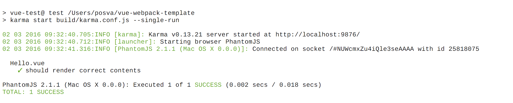
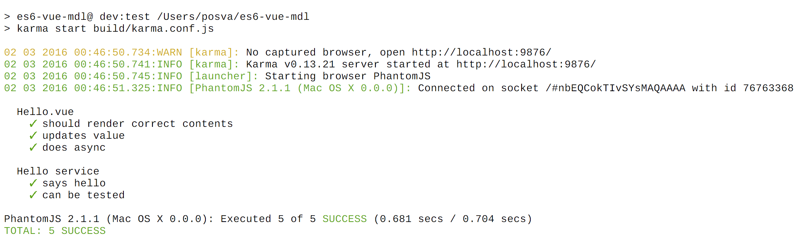
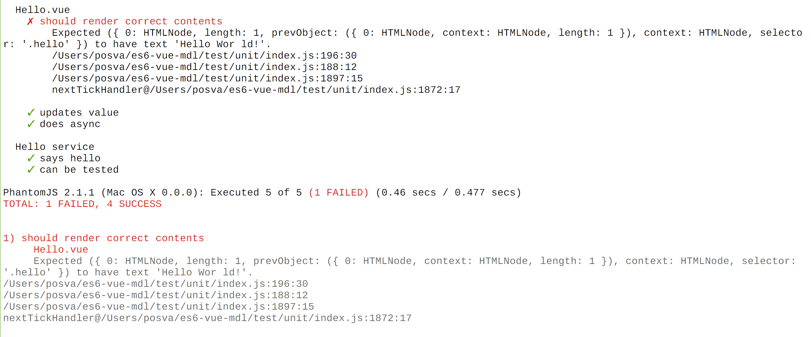
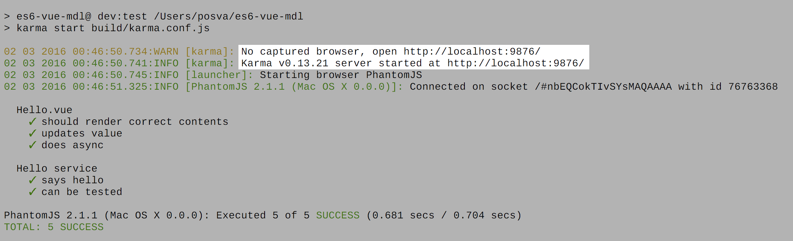

Testing in Vue.js
Testing in Vue.js
Unit and Functional
Everything at your fingertips
ng a karma, jasmine, protractor
1.5M results
ng a karma, jasmine, protractor
400k results
And Vue.js 🔎
16k results
or test important. why
donc pas se désanimer
npm i -g vue-cli
vue init webpack my-project
npm i
☕️
npm t

Code Coverage?

vue format = barrier
main issue when building stuff around
happen the same on react
Connait pas forcemment webpack
mais tu veux rajouter des choses
Vue.js Testing stack
Compile Vue files before testing
Une des choses qui rend les tests compliques
il faut compiler les fichier vue
Test directory 📂
src
├── components
│ └── Hello.vue
└── services
└── hello-service.js
test
└── unit
├── Hello.spec.js
├── hello-service.spec.js
└── index.js
index = entry point
spec = test
utils = utils functions
Component as a module
import Hello from 'src/components/Hello'
describe('Hello.vue', () => {
let vm, el
beforeEach(() => {
vm = instantiateComponent(Hello)
el = $j(vm.$el)
})
})
Component initialization
it('initializes name', () => {
expect(vm.name).toBe('World')
})
Component data
it('displays the name', (done) => {
vm.name = 'Vuers'
expect(el).toHaveText('Hello World!')
nextTick(vm).then(() =>
expect(el).toHaveText('Hello Vuers!')
done()
})
I'm missing 🤔
instantiateComponentkarma-jasmine-jquery✨ (toHaveText,toHaveCss, ...)nextTick()→ Promise
instantiateComponent beforeEach
let app = new Vue({
template: '<div><hello :name="name"></hello></div>',
components: { Hello }
}).$mount()
app.$nextTick(() => {
vm = app.$children[0]
el = $j(vm.$el)
done()
})
plutot fait a chaque it
peut varier
regrouper dans des describe
jQuery
npm i -D karma-jasmine-jquery- 📝 karma.conf.js →
frameworks: ['jasmine-jquery', 'jasmine'] - jQuery 2.1 →
$j
Launch karma✅

Errors❌

Use a real browser

Demo
faire l'autre démo d'abord
npm i -D isparta-loader karma-coverage- 📝 karma.conf.js
Coverage
reporters: ['spec', 'coverage'],
...
coverageReporter: {
type: 'lcov',
dir: '../coverage'
}
Vue Coverage
webpackConf.vue = {
loaders: {
js: 'isparta'
}
}
JS Coverage
webpackConf.module.preLoaders = [
{
test: /\.js$/,
loader: 'isparta',
exclude: /(test|node_modules)/
}
]